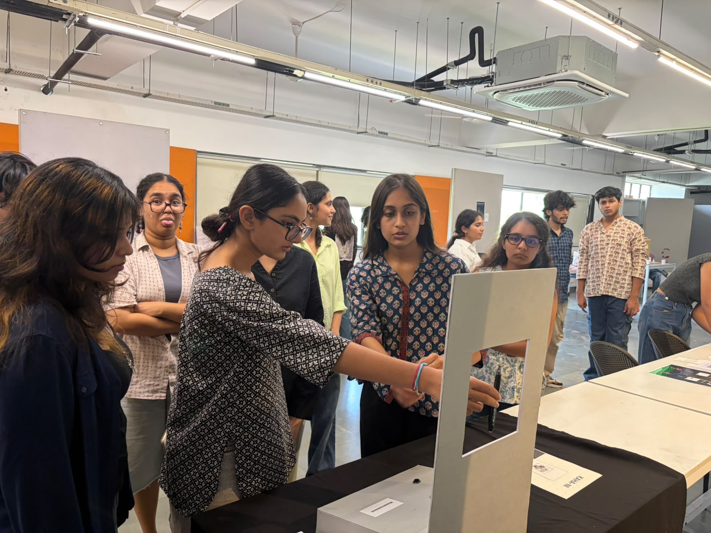

KAHA-NI
An installation that turns everyday objects into short stories.

KAHA-NI is a machine that looks at an object and prints a short generated story about it.
Hold it up. Press the button. It prints a story.
Hold something up to the camera. Press the button. The machine sees the object, searches what the internet currently associates with it, and drifts that sideways away from what the thing is, toward what it might mean. The machine then prints a short story about the object in about thirty seconds.
Then the machine forgets. The object, the story, the moment; nothing is stored. The machine has no memory. The slip does.
Paper accumulating by hand, nothing else
Pin your slip to the board on the wall. The board is the only memory this installation has, no database, no cloud, just paper accumulating by hand across the exhibition. Putting it up on the board is not a compulsion, it's a choice given to the user; take the memory with you or pin it on the board.
Every slip was made once and won't be made again. The same object photographed on a different day produces a different story, because the machine reads what the internet is saying at that exact moment. Nothing repeats. The board is the record.

Most things we carry are worn, cracked, bent, or half-broken, and we don't fix them. A toothbrush with flat bristles that still works. A charger tangled since the last move. A key that opens nothing anymore. KAHA-NI finds the story in exactly what's worn about an object because that's usually the most honest thing about it.
The installation is being planned to be put up at an art cafe/workshop where people already bring things they've made or make things there itself. Visitors bring their objects the same way. The machine reads it, and generates a story based on their object. The flow will definitely be the same, but this gives it a more impactful, personal feeling for the user because the object would be something they have just made in the cafe/workshop, and the story would be based on their object.